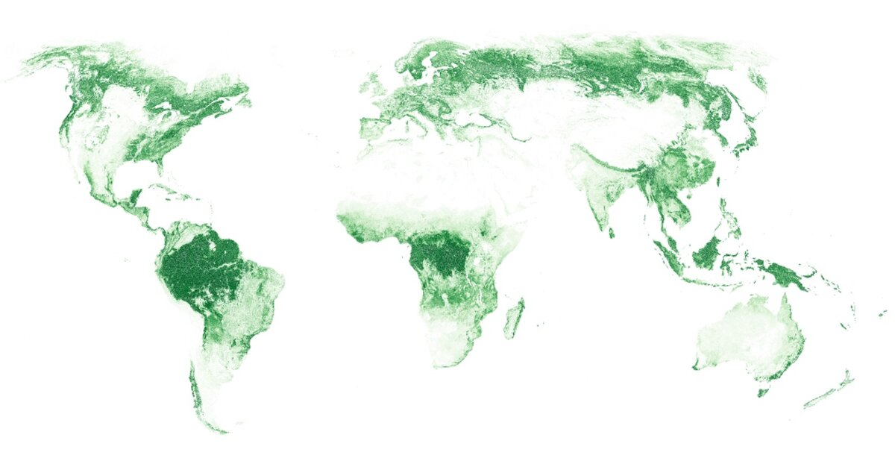

Леса покрывают 31% поверхности суши в мире. Ежегодно они поглощают около 15 миллиардов тонн углекислого газа. Половина этой лесной зоны принадлежит тропическим лесам, четвёртая часть расположена в северном полушарии. Площади, занятые деревьями с сомкнутостью крон менее 0.2-0.3, считаются не покрытыми лесом. Площадь леса в России составляет 8,8 млн км. 
Говоря о лесе, мы представляем себе обширную местность, занятую деревьями, кустарниками и травами. Название леса зависит от того, какие деревья в нём преобладают. В хвойном лесу ведущая роль принадлежит хвойным деревьям: елям, соснам, пихтам, лиственницам, кедрам. Если в лесу растут в основном лиственные деревья, его называют лиственным. Если соотношение хвойных и лиственных пород деревьев равное, это смешанный лес. Лес — это не только совокупность кустарников и деревьев. Лес — это экосистема, в которой живая и неживая природа тесно связаны, а организмы взаимодействуют друг с другом.
Весь лесной растительный мир принято делить на «этажи» — ярусы. Высокие деревья — сосна, дуб — занимают первый ярус леса, им достаётся больше всего тепла и света. На втором ярусе обитают деревья пониже, например берёза, ясень, рябина. Кустарники располагаются на третьем ярусе, а папоротники, травы и мхи — на четвёртом. Высокие деревья первого яруса создают тень, благодаря которой другие растения находятся в прохладе, а почва сохраняет влагу даже в жаркую погоду.